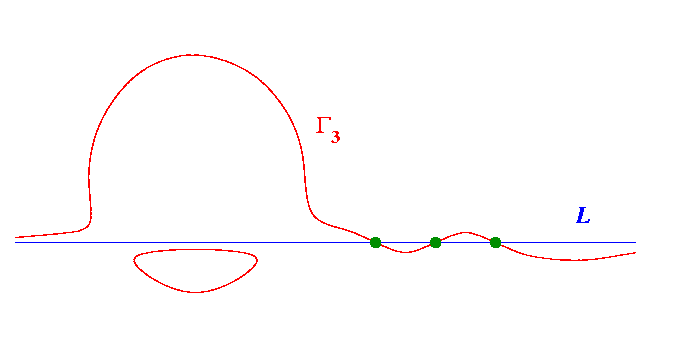

Harnack's Construction
: Cubic

The
Harnack cubic
consists of one oval and one pseudoline. The pseudoline meets the fixed
line
in three points, forming two singular ovals.
This configuration is the starting point for constructing the Harnack quartic.